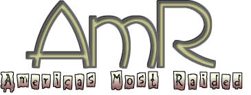

You know.. some people think that all we are is
a bunch of losers going around defacing sites, and saying that
"jew r 0wned", and crap like that.. the truth of the
matter is... we have something to say.. something that we believe
in.. like freedom of information.. such as the MPAA deal with
DeCSS, and the Napster thing.. with Metallica and Dr. Dre. these
things are important. because it's YOUR right to have access to
these things.. DVD's and MP3's.. it's WRONG for them to try to
control these mediums.. i don't care whether they created the
content or not.. no matter what they tell you, they are NOT losing
any money from it. Metallica is a huge band.. i use to be a big
fan of theres.. until i realized what losers they are. and nobody
liked you Dr. Dre any ways.. so shut up!! and as for the MPAA...
leave it alone.. you're not losing anything from this.. as a matter
of fact, i love DVD's... and MP3's... when i download a ripped
DVD or some MP3's... i still go out and BUY the original.. think
of these things, as another version of "shareware"..
it's getting your material out there, for others to enjoy.. and
i betcha, if you did a survey, you'd see i'm NOT the only 1 going
out afterwards, and buying up original stock, so to speak... as
long as the MPAA keeps being greedy with DVD and going against
the idea of DeCSS and the recording industry keeps going after
Napster.. AmR, will continue the fight for "freedom"
of information and entertainment.
peace...
-AmR (a.m.r@cool.com)
ps. Shouts to: hacker-, datagram, ch1nkor, hell`, tobit,
revcane, frame, b1nary, rsh, hackweiser, and the cDc... =c]
Admin: nothing was harmed. your original stuff is still
in it's default directories, etc.. with a note of how to fix your
hole.. ;c]
"I think any time you
expose vulnerabilities it's a good thing." - Attorney General Janet Reno